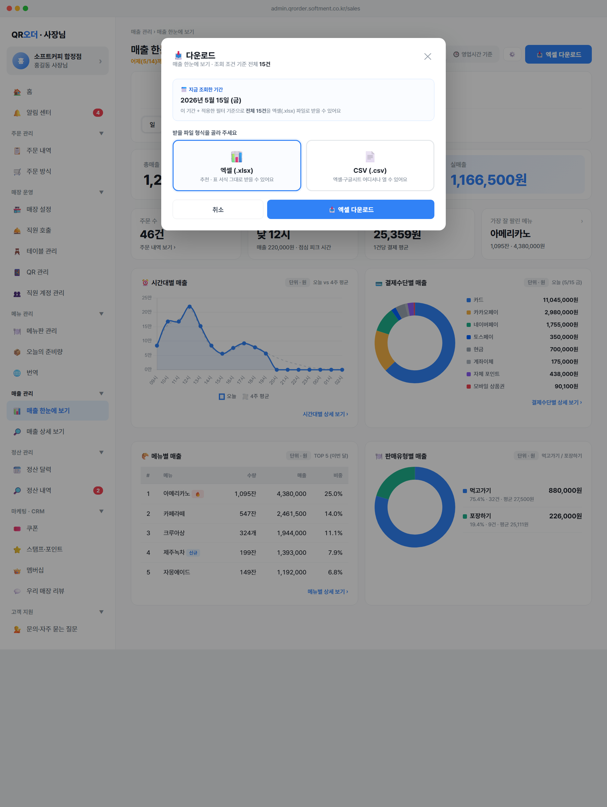

← 목록으로

📷 화면 캡처 · 다운로드 모달 — 엑셀/CSV 형식 선택 카드 + 조회 기간 안내
변경 전
버튼 라벨이 화면마다 제각각 — 「📤 내보내기」 / 「📤 엑셀로 받기」 / 「📥 엑셀·CSV 받기」. 사장님 입장에서 같은 기능을 다른 이름으로 학습해야 했음.
변경 후
전 화면 「📥 엑셀 다운로드」 단일 라벨. 클릭 시 모달에서 엑셀 / CSV 형식을 골라서 받기 — 한 화면에서 두 형식 모두 지원.
주요 요소
1
통일된 📥 엑셀 다운로드 메인 버튼
매출·정산·주문·메뉴 화면 우측 상단 툴바
🎯 기능·목적
- 화면마다 다른 라벨을 통일해 사장님 학습 부담 제거
- 📥 아이콘으로 "내려받기"라는 행동 명확히 전달
- 가장 자주 쓰이는 형식(엑셀)을 라벨에 노출 — 사장님이 "엑셀 받을 거"라는 기대로 클릭
⚙️ 동작·상태값
- 버튼 —
btn-primary 스타일 (파란 배경)
- 클릭 시
openExport(rowsCount, source, dateRange) 호출 → 모달 오픈
- 메뉴판은 별도 —
openMenuExport() (가져오기 양식과 동일 컬럼)
- 옛 라벨 일괄 변경 — 「📤 내보내기」 · 「📤 엑셀로 받기」 · 「📥 엑셀·CSV 받기」 → 「📥 엑셀 다운로드」
⚠️ 예외·UX 문구
- title: 없음 (라벨이 충분히 명확)
- 호버 시 색만 조금 진해짐 (
#1e6cd9)
- 안내문도 통일 —
엑셀 다운로드는 조회된 N건 전체
- 모달 안에서 CSV 선택해도 메인 버튼 라벨은 그대로 「엑셀 다운로드」
2
모달 — 엑셀 / CSV 형식 선택 카드
버튼 클릭 후 열리는 모달 본문 중앙
🎯 기능·목적
- 모달에서 형식을 골라 받을 수 있게 — 두 형식 모두 지원
- 다운로드 직전에 조회 기간·건수·형식 한 번에 확인 (실수 방지)
- 기본 선택: 엑셀 (마지막 선택 기억 — 다음에 모달 열어도 같은 형식)
⚙️ 동작·상태값
- 헤더:
📥 다운로드 — sub: ${source} · 조회 조건 기준 전체 N건
- 본문 상단 — 파란 카드 「📅 지금 조회한 기간」 (dateRange 있으면)
- 본문 중앙 — 형식 선택 카드 2개 (엑셀 .xlsx / CSV .csv)
- 선택한 형식에 따라 메인 다운로드 버튼 라벨 동적 변경 —
📥 엑셀 다운로드 또는 📥 CSV 다운로드
- 버튼:
[취소] [📥 엑셀 다운로드 / 📥 CSV 다운로드]
- 확인 —
confirmExport(cnt, src) → 토스트 + 모달 닫기
⚠️ 예외·UX 문구
- 형식 선택 카드 라벨 —
📊 엑셀 (.xlsx) · 추천 · 표 서식 그대로 받을 수 있어요 / 📄 CSV (.csv) · 엑셀·구글시트 어디서나 열 수 있어요
- 0건 — 모달은 열리지만 안내 카드에 "전체 0건" 표시 (다운로드 가능)
- 엑셀 라이브러리(SheetJS) 미로드 —
alert('엑셀 라이브러리를 불러오는 중이에요...')
- 완료 토스트 —
📥 [source] N건을 엑셀/CSV 파일로 내려받았어요 (선택 형식 반영)
- 모달 외 클릭 시 자동 닫힘
3
메뉴 내려받기 — 동일 패턴
메뉴 관리 → 메뉴판 → 📥 엑셀 다운로드
🎯 기능·목적
- 등록된 메뉴 전체를 엑셀/CSV로 내려받기 (가져오기 양식과 동일 컬럼)
- 수정 후 그대로 재업로드 가능 (왕복 워크플로)
⚙️ 동작·상태값
- 버튼 라벨 — 「📥 엑셀 다운로드」 (옛 「📥 엑셀·CSV 받기」)
- 모달 — 동일 형식 선택 카드 + 「📥 엑셀/CSV 다운로드」 버튼
- 엑셀: SheetJS의
XLSX.writeFile / CSV: toCSV + triggerDownload
- 파일명:
qrorder-menu-YYYY-MM-DD.xlsx 또는 .csv
⚠️ 예외·UX 문구
- 안내: "받은 파일은 📊 엑셀로 한 번에 올리기 양식과 컬럼이 같아, 수정해서 그대로 다시 올릴 수 있어요."
- title: "등록된 메뉴를 엑셀(.xlsx) 파일로 내려받을 수 있어요"
- 완료 토스트:
📥 메뉴 N개를 엑셀/CSV 파일로 내려받았어요
설계 원칙 — 메인 버튼 라벨은 고정 통일(엑셀 다운로드)이고, 실제 받을 형식은 모달 한 화면에서 선택해요. 사장님은 평소엔 엑셀로 받지만, 다른 시스템과 호환이 필요할 때만 CSV를 골라 받을 수 있어요. 두 형식을 모두 지원하면서도 버튼 자체는 단일해서 화면 간 일관성이 유지됩니다.